Apply local influence approaches in terms of slope and curvature on the AUC to quantify the impacts of all observations simultaneously.
LAUC(score, binary, threshold = 0.2, name = NULL)A vector containing the predictions (continuous scores) assigned by classifiers; Must be numeric.
A vector containing the true class labels 1: positive and 0: negative. Must have the same dimensions as 'score.'
A numeric value determining the threshold to distinguish influential observations from normal ones; Must lie between 0 and 1; Defaults to 0.2.
A vector comprising the appellations for observations; Must have the same dimensions as 'score.'
A list of objects including (1) `output`: a list of results with `AUC` (numeric), `Slope` (a list of dataframes) and `Curvature` (a list of dataframes)); (2) `rdata`: a dataframe of essential results for visualization (3) `threshold`: a used numeric value to distinguish influential observations from normal ones.
The influence functions on the AUC focus on the deletion diagnostics; however, such approaches may encounter the masking effect. Rather than dealing with single observations
once at a time, local influence methods address this issue by finding the weighted direction of all observations accompanied by the greatest (magnitude) slope and curvature. From the explicit formula based on
the slope, local influence methods may face the imbalanced data effect. To thoroughly investigate the potential observation in binary classification, we suggest end-users to apply ICLC and IAUC as well.
For a complete discussion of these functions, please see the reference.
Ke, B. S., Chiang, A. J., & Chang, Y. C. I. (2018). Influence Analysis for the Area Under the Receiver Operating Characteristic Curve. Journal of biopharmaceutical statistics, 28(4), 722-734.
library(ROCR)
data("ROCR.simple")
# print out LAUC results directly
LAUC(ROCR.simple$predictions,ROCR.simple$labels)
#> output is:
#> $AUC
#> [1] 0.8341875
#>
#> $Slope
#> $Slope$Pos
#> Index influence
#> [1,] 29 -0.2854024
#> [2,] 86 -0.2886361
#> [3,] 93 -0.2013255
#> [4,] 145 -0.2207279
#> [5,] 178 -0.2854024
#>
#> $Slope$Neg
#> Index influence
#> [1,] 25 -0.2379357
#> [2,] 77 -0.2185334
#> [3,] 108 -0.2379357
#> [4,] 193 -0.2411695
#>
#>
#> $Curvature
#> $Curvature$Pos
#> Index influence
#> [1,] 86 -0.2090887
#> [2,] 178 -0.2746311
#>
#> $Curvature$Neg
#> Index influence
#>
#>
data(mtcars)
glmfit <- glm(vs ~ wt + disp, family = binomial, data = mtcars)
prob <- as.vector(predict(glmfit, newdata = mtcars, type = "response"))
output <- LAUC(prob, mtcars$vs, name = rownames(mtcars))
# Show results
print(output)
#> output is:
#> $AUC
#> [1] 0.9484127
#>
#> $Slope
#> $Slope$Pos
#> Index influence
#> Hornet 4 Drive 4 -0.6939810
#> Valiant 6 -0.3510727
#>
#> $Slope$Neg
#> Index influence
#> Porsche 914-2 27 -0.2603563
#> Ferrari Dino 30 -0.2603563
#>
#>
#> $Curvature
#> $Curvature$Pos
#> Index influence
#> Hornet 4 Drive 4 -0.6083615
#> Valiant 6 -0.3362089
#>
#> $Curvature$Neg
#> Index influence
#> Porsche 914-2 27 -0.2741215
#> Ferrari Dino 30 -0.2821815
#>
#>
# Visualize results
plot(output)

